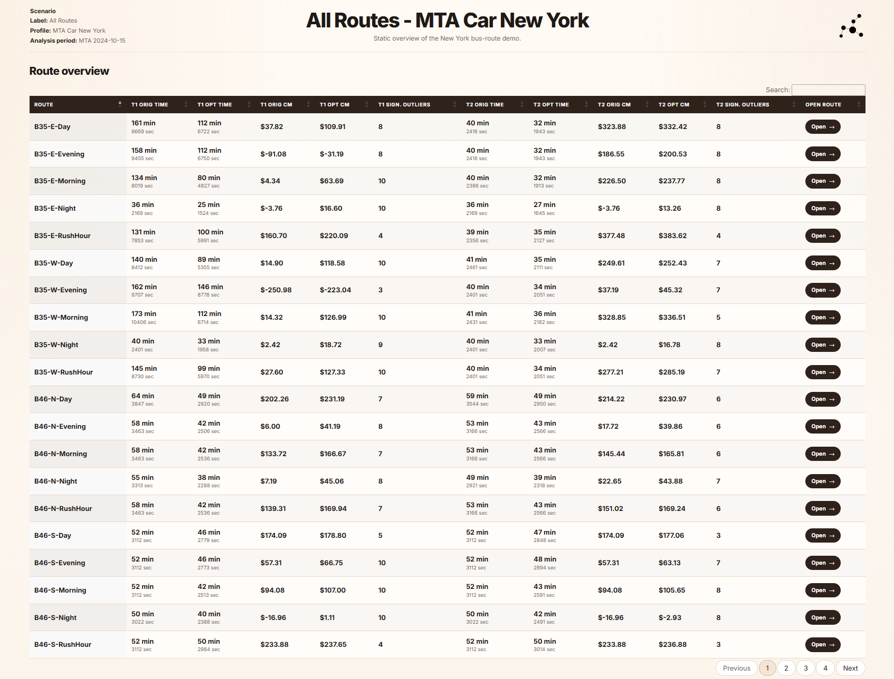
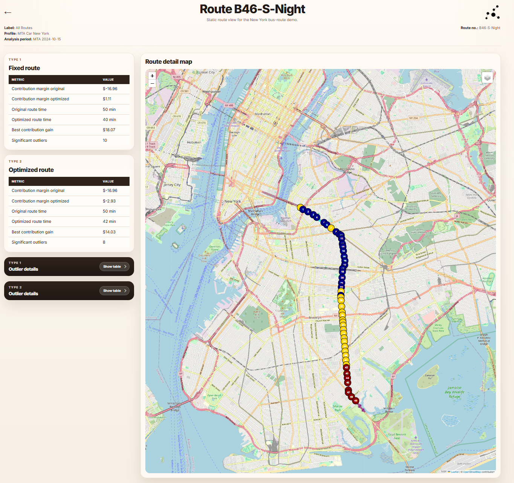
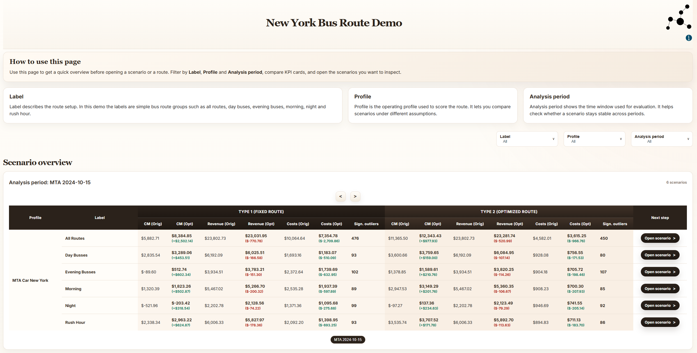
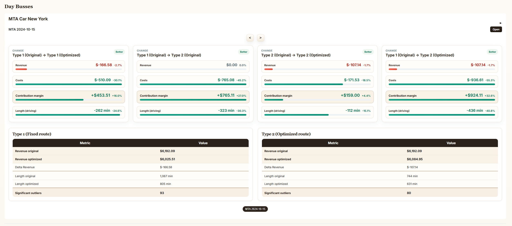
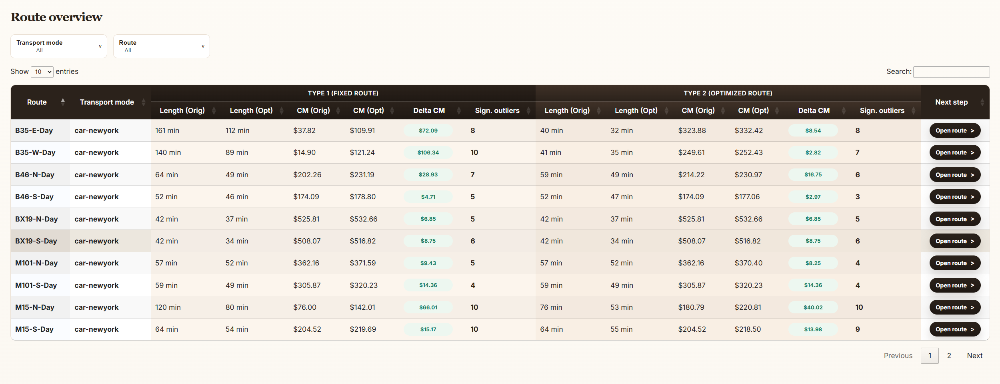
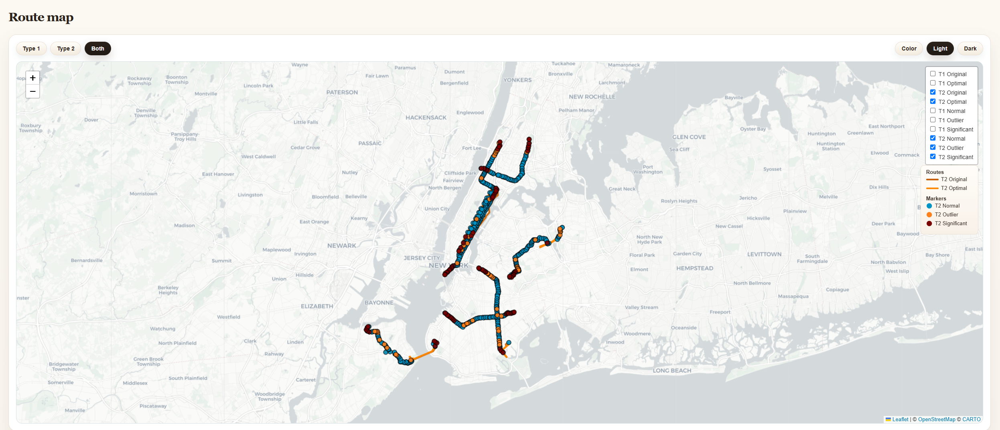
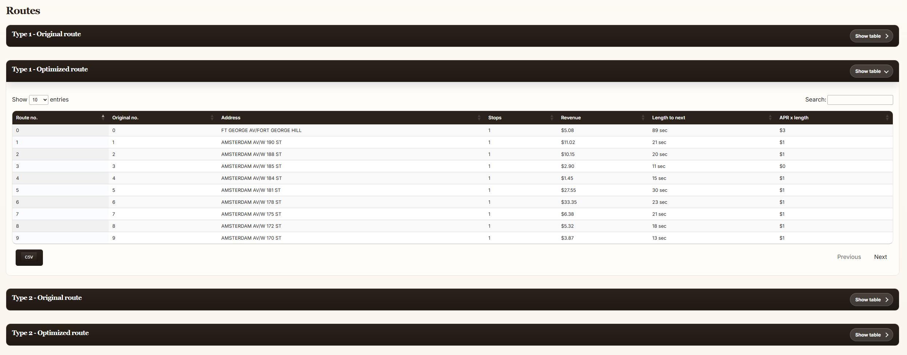

A Practical Demo of the Route Outlier Workflow
One compact example that connects scenario data, static presentation output and the interactive application.
This example shows how the solution is applied in one concrete public-transport scenario.
- Purpose: Demo the algorithm and implementation in a real-life scenario.
- How: Use MTA bus data to construct one concrete route optimization example.
In the sections below, we present the solution as implemented on real data and show how the same economic outlier framework can be read from scenario level down to individual route decisions.
Data
The example is built from two public MTA data sources: MTA Bus Stop Level Ridership: Beginning 2024 and MTA Bus Stops.
Sources: MTA Bus Stop Level Ridership: Beginning 2024 and MTA Bus Stops.
The first defines the route units that the algorithm evaluates. The second assigns a modeled service value to each stop within the same scenario structure.
routes.csv
This file defines the route input itself. Each row represents one route unit, which in this example corresponds to one bus stop in one time-specific route scenario.
| Column | Meaning |
|---|---|
RouteId |
Scenario-specific route identifier, combining route, direction and time-of-day profile. |
Adress Id |
Stop identifier used to connect the route input with the service-value file. |
Adress |
Stop name used for readable route and map output. |
lon |
Longitude of the stop location. |
lat |
Latitude of the stop location. |
linjenummer |
Observed stop order within the route scenario. |
L_u |
Modeled internal route-unit cost, interpreted here as dwell time at the stop. |
route_group |
Scenario label used to group routes into higher-level views such as Day Busses or Rush Hour. |
type |
Routing profile category used by the runtime configuration. |
problem_type |
Problem formulation used by the solver, for example open-route evaluation through HPP. |
route_revenue.csv
This file provides the modeled service value associated with each stop. It supplies the economic quantity that the outlier model compares against route cost.
| Column | Meaning |
|---|---|
RouteId |
Scenario-specific route identifier matching the route input file. |
Adress Id |
Stop identifier used to attach service value to the correct route unit. |
Time profile |
Scenario time reference used to group observations into the modeled demand period, such as Morning, Day or Rush Hour. |
Oms |
Modeled revenue or service-value proxy assigned to the stop in that scenario. |
Static
The static layer presents one prepared scenario as a small, fixed publication. The outputs are rendered in advance, so the reader receives a finished narrative rather than an interactive workspace.
| Page | Role in the static presentation |
|---|---|
| Overview page | Introduces the scenario and compares all generated routes in one table and shows the full geographical spread of the scenario before route-level inspection. |
| Route page | Presents one selected route through KPIs, outlier tables and a focused detail map. |
Overview page
The first page functions as the scenario entry point. It establishes the label, profile and analysis period, then presents the route collection as a sortable overview table.
In this form, the static output behaves less like an analysis tool and more like a compact report: the reader can immediately compare route times, contribution margins and significant outlier counts across all generated scenarios.

The same overview also includes a full route map. This map serves for showing the geographical spread of the example at a glance.
The reader can see how the scenarios occupy different parts of New York, how the stop markers are distributed, and how the static output still preserves route geometry even without the broader application shell around it.

Route page
From the overview page, each row opens a dedicated route page. This is the analytical center of the static presentation.
Here the page shifts from scenario-wide comparison to route-level inspection: the KPI cards separate Type 1 and Type 2 results, the outlier blocks can be expanded when needed, and the map focuses on one concrete route rather than the full collection.

In that sense, the static solution is best understood as a rendered interpretation of the same underlying model.
It fixes the scenario, computes the outputs in advance and presents them as a readable sequence of pages: first the scenario overview, then the full map, and finally the individual route analysis.
Application
The application layer presents the same scenario as an interactive reading environment.
Instead of moving through a fixed sequence of pre-rendered pages, the reader can filter scenarios, compare outputs, open a selected case and then continue from scenario-level inspection to route-level detail.
| View | Role in the application |
|---|---|
| Scenario overview | Compares scenario outcomes before route-level drill-down. |
| Scenario route views | Show the route overview table, the shared route map and scenario KPI summaries. |
| Route page | Presents one route through KPIs, detailed maps and expandable route tables. |
Scenario overview
The entry point is the landing page. It frames the demo, explains the available selectors and prepares the reader for the fact that the example is not one route but a collection of scenarios organized by label, profile and analysis period.
In contrast to the static version, this page acts as an interface for moving between cases rather than only as a fixed report header.

In the scenario overview the comparison is explicit: Type 1 and Type 2 outputs are placed side by side, and the user can read the scenario as a set of economic changes rather than as a list of stops.
The KPI cards summarize the most important transitions, while the metric tables below make the underlying values visible in a stable, comparable form.

Scenario route views
From Scenario overview you can look into certain routes.
One is the route overview table, where each route instance can be compared through route length, contribution margin and the number of significant outliers.
The other is the scenario-wide map, where the same collection is interpreted spatially. Together, these two pages perform the same conceptual task from different angles: one in numbers, one in geography.


A separate scenario KPI page reinforces the same interpretation at a higher level of aggregation. Rather than focusing on individual routes, it summarizes how the chosen scenario behaves under the main Type 1 and Type 2 comparisons.

Route page
The route page is the most detailed part of the application. It preserves the scenario context in the header, then combines Type 1 and Type 2 KPI cards with a detailed route-and-stop map. Here the application becomes interpretive rather than merely comparative: the user can see where the route runs, which stops become significant, and how the alternative solutions relate to one another on the map.

Below the map, the route page continues into expandable route tables. These tables are less about visual orientation and more about inspection: they expose stop order, stop identity, service value and length to the next stop for each route solution.
This is where the application most clearly moves from summary interpretation into auditable detail.

Taken together, the application not change the underlying outlier model. What it changes is the mode of reading.
static layer presents the scenario as a finished document, while the application layer lets the reader move between explanation, comparison, geography and route-level inspection without leaving the same analytical framework.
How to Use the Solution
The introduction began with a simple tension: the stop that looks geographically inconvenient is not necessarily the stop that weakens the route economically.
The purpose of the solution is therefore not only to display routes, but to guide the reader from visible structure to economic interpretation.
| Step | Question to ask |
|---|---|
| 1. Start with the scenario | Which label, profile and analysis period define the case being evaluated? |
| 2. Compare the overview | Which scenarios or routes show the largest change in contribution margin, length or outlier count? |
| 3. Inspect the geography | Do the costly or significant parts of the route also look spatially unusual? |
| 4. Open the route detail | Which concrete stops drive the result once the route is examined at route level? |
| 5. Read the outlier tables | Which removals improve the route, and is the gain driven by travel reduction, low value, or both? |
In practice, the solution should be read from outside to inside. First identify the scenario. Then use the overview pages to compare which route instances appear economically weak. After that, use the maps to understand whether the pattern is concentrated, peripheral or structurally embedded in the route. Only then should the reader move to the route page and inspect the specific stop sequence and outlier sets.
This order matters. If one begins immediately with a single route, the result is easy to over-interpret as a purely local anomaly. The broader scenario view keeps the original question in focus: not which stop looks strange in isolation, but which stop or subset actually changes the route's contribution margin in a meaningful way.
The solution is most useful when it is read as a progression: from scenario, to comparison, to map, to route, and finally to the concrete stop-level explanation behind the economic result.
In that sense, the workflow returns directly to the problem posed in the introduction.
The map gives the first intuition, but the decision is economic. The route that appears long may still be justified. The stop that appears harmless may still be weak. The role of the solution is to make that distinction visible, testable and readable.